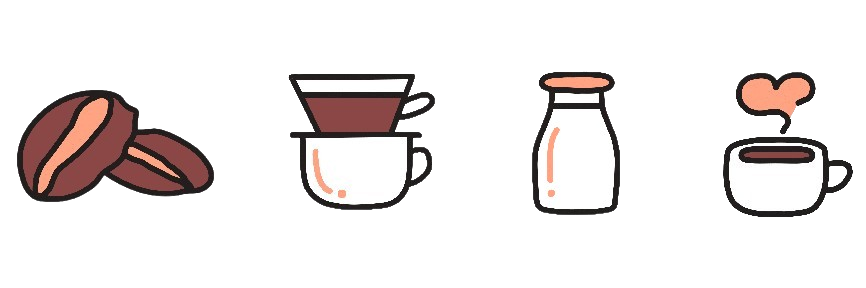
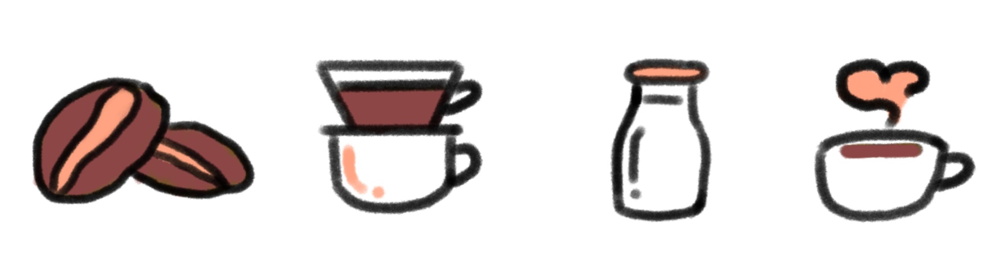

a cup of coffee
4-icon challenge
the project
For my first ever Adobe Illustrator project, I took on the popular 4-icon challenge with the theme of coffee. I was able to quickly figure out the basic design through a couple rough sketches on Procreate, but translating it to Illustrator was the biggest challenge, as it was my first time working with Illustrator.
I decided to show the process of making and enjoying coffee, specifically a latte. So I started with the coffee beans, then the pour-over and adding milk, and finishing off with the final latte.
toolkit
Programs Used: Adobe Illustrator, Procreate
rough sketches
final product
+ back to projects +